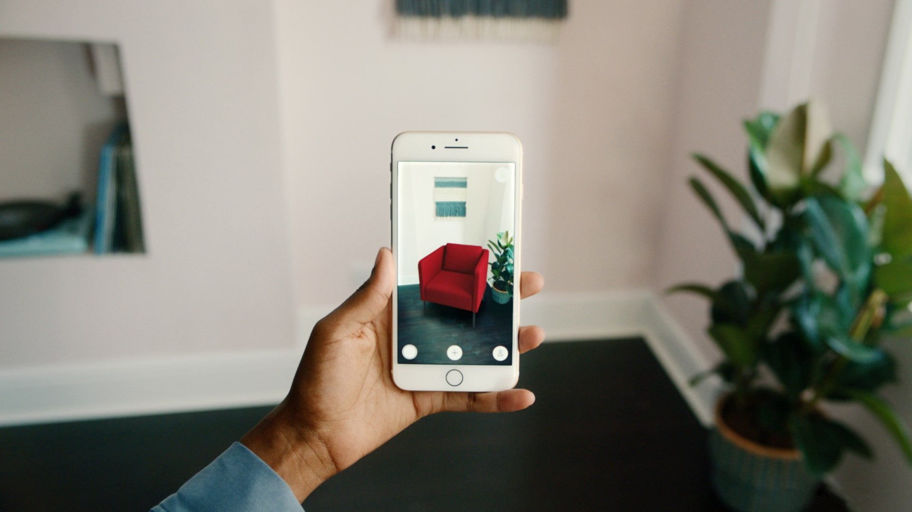
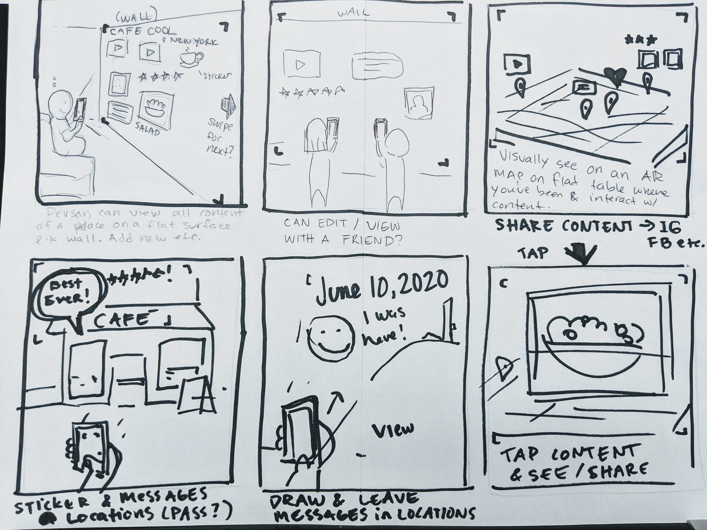
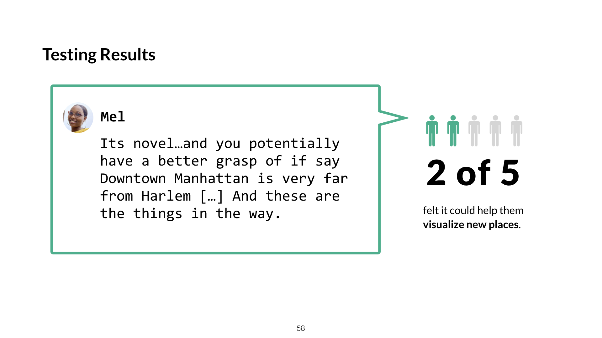
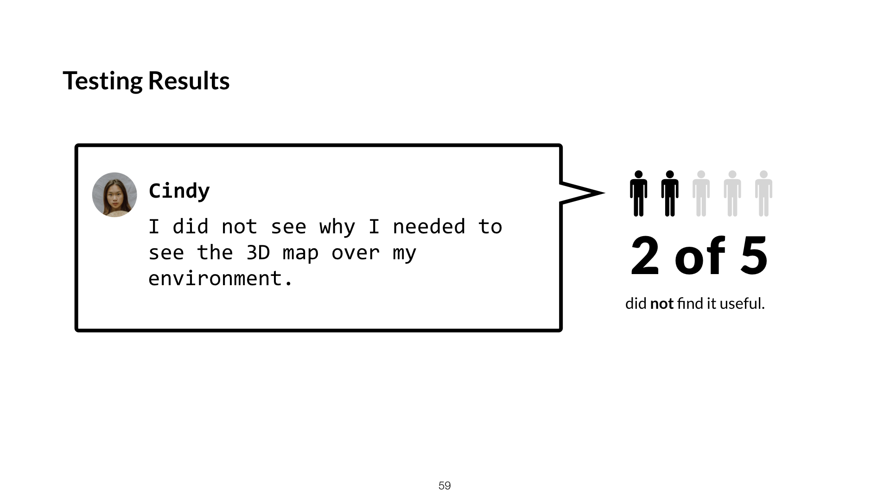

Exploring Augmented Reality for My Fave Places
My Fave Places is a startup helping people remember favorite restaurants and destinations and share recommendations with friends through an iOS app. The company's long-term vision is to enable people to re-experience and connect with places they love from anywhere through mixed and virtual reality.I connected with My Fave Places through my UX program.
Role and Responsibilities
- Investigating the desirability and feasibility of augmented reality in the app.
- Designing a concept of how augmented reality could help and engage travelers.
- Tested concepts with potential users to determine next steps for the company.
Duration
4.5 weeks
Constraints
- COVID-19 - meant testing had to be limited to remote.
- Budget - two person startup. Had to be scrappy!
- UX Maturity - I was the sole UX'er.
Understanding the Company
I talked with the founder to understand the underlying reasons why they wanted to pursue AR.
Fun, Useful, and Interactive They want to re-invent the platform as more social and interactive to increase enagagement.
Find a New North They want to fast-track the company vision of providing immersive experiences to wow investors.
Process
- Research AR - understand the market through expert interviews and analyzing competitors.
- Explore Solutions - present options for My Fave Places to explore and measure goals.
- Test a Solution - test viability with potential users. Prototype could be presented to investors.
What is AR?
AR overlays digital elements onto your environment (often through the lens of a camera). A popular use of AR is filters and lenses in Snapchat or Instagram to modify someone's face.

AR excels at visualization and annotating over reality. For example, IKEA Place helps buyers visualize furniture in their homes.
Defining
By talking with stakeholders and researching the company, I identified two types of users that My Fave Places wanted to target. I created lightweight personas to show the differences and support my decision to focus one target user.
Based on My Fave Places goal to be more engaging I asked myself how I might make user's experiences more exciting and interactive? How could I help them discover new places and share with others?
Sketching
I set up a meeting to present my ideas and discuss them with the stakeholders. Then we voted for the ideas that wanted to test first.
Writing and drawing scenarios for the top concepts helped to define use cases and envision the value for users.
Prototyping an AR experience
Before prototyping, I needed to clarify what I wanted to learn through testing. Since this concept was in an early stage of research, my research goals were focused on desirability and feasbility.
- How do potential users discover and share destinations?
- What does potential users’ environment look like? Will they have affordances like tables and enough space for AR?
- Will users understand and feel excited about using an AR map?
Challenges Prototyping and Testing AR
Designing for augmented reality requires thinking beyond the screen. Using AR, people can walk around, tilt the device, or even make subtle gestures to interact with the system. This makes testing that experience even more challenging. How could I mockup the experience of a city appearing in their environment and demonstrate interactions clearly? I also had to consider how I would test the prorotype remotely due to COVID-19.
Solution - Create an video demonstration
I decided to create a video that could show how the feature might be used. I made it by recording AR environment I created with Torch, design the interface elements and screens in Figma and finally stitch them together in video.
While not a perfect solution, a video seemed the best approach for my situtation and time available.
Pros
- Record reactions remotely.
- Easier than paper prototyping or Wizard of OZ testing
- Participants can see movement, perspective, and environment better than a drawing or mockup of AR.
Cons
- Can’t see what participants would actually do.
- Pausing or rewatching the video eats up interview time.
Designing for AR
There are many considerations when designing for AR than for on-glass interfaces. Buttons are harder to distinguish and the size of elements can change when in perspective.
Keeping actions accessibile
- Larger buttons for accessibility in AR.
- Actions are distinguished from details by floating them to the right of the card.
Maintaining the experience
- See the restaurant details without leaving the AR experience.
- Having certain elements end off screen encourages moving the device to see more.

Results
I screened for potential users and conducted 30-minute remote interviews with 5 participants. In the first portion of the interview, I asked participants about traveling, planning outings, and frustrations they encounter. Then, I shared the concept and asked questions to gage desirability.
There was an interesting split in the results. 2/5 participants were excited when seeing the concept.
2/5 participants were confused or felt that the AR wasn't useful for finding new or nearby places. The last participant was mostly neutral towards the AR concept.
What went well
- The split in desirability revealed the need more user research before moving forward in AR.
- Interviews provided suggestions of preferences and topics to research further and help define the content.
What I would have done differently
- 15-30 participants (minimum) to better gauge desirability.
- Mix unmoderated with the 5 moderated tests.
- Testing different video formats (possibly playacting for more context)
What I learned
- Empathize with the challenges and goals of the business.
- Read between the lines features for the underlying why.
- Just test it. Data is harder to refute than opinion.